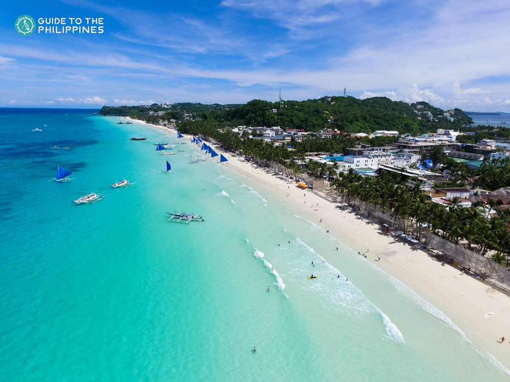
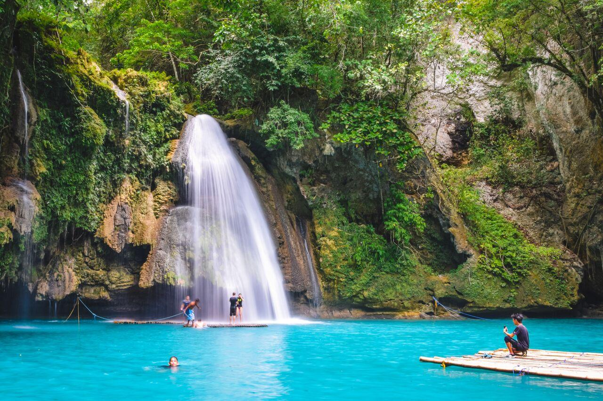
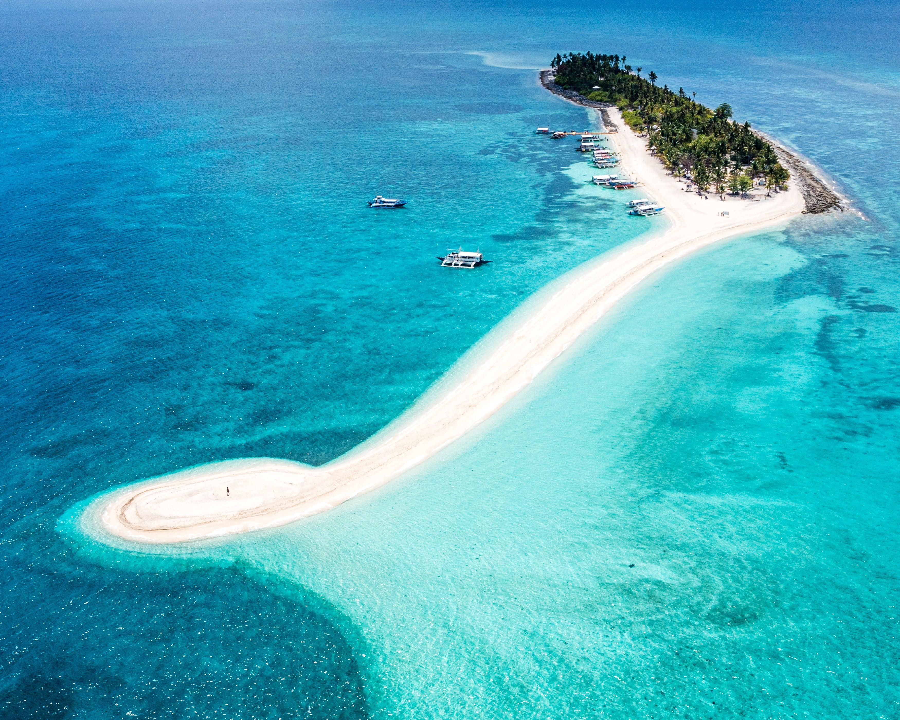

Destinations



The Visayas offers many beautiful destinations for tourists who enjoy beaches, island adventures, and nature.
Recommended destinations:
- Boracay, Aklan - Famous for its white-sand beaches and clear waters.
- Cebu - Known for its historical landmarks, waterfalls, and beautiful beaches.
- Bohol - Popular for its Chocolate Hills, beaches, and countryside attractions.
- Iloilo City - Known for its heritage sites, local cuisine, and cultural attractions.
- Samar - Known for its caves, rivers, and natural landscapes.
- Leyte - Famous for its historical significance and beautiful coastal destinations.